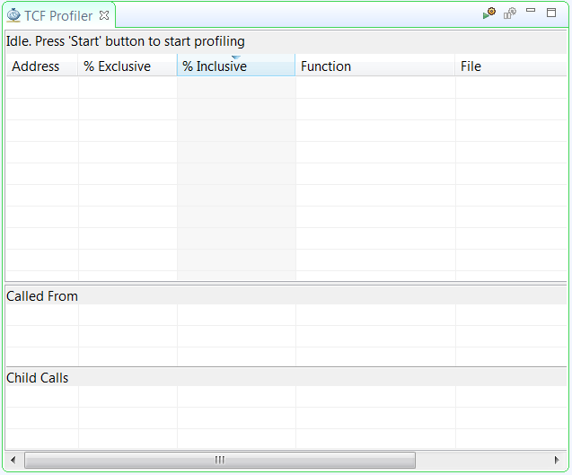
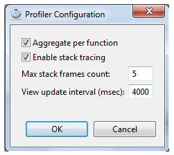
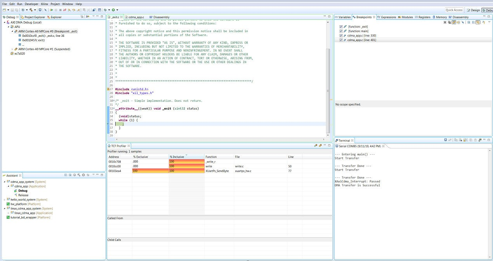

Software Profiling Using the Vitis Software Platform¶
In this chapter, you will enable profiling features for the standalone domain or board support package (BSP) and the application related to AXI CDMA, which you created in Linux Booting and Debug in the Vitis Software Platform.
Profiling an Application in the Vitis Software Platform with System Debugger¶
Profiling is a method by which the software execution time of each routine is determined. You can use this information to determine critical pieces of code and optimal code placement in a design. Routines that are frequently called are best suited for placement in fast memories, such as cache memory. You can also use profiling information to determine whether a piece of code can be placed in hardware, thereby improving overall performance.
You can use the system debugger in the Vitis unified software platform to profile your application.
Select the application you want to profile.
Right-click the application and select Debug As → Launch on Hardware (Single Application Debug).
If the Confirm Perspective Switch popup window appears, click Yes. The Debug perspective opens.
When the application stops at main, open the TCF Profiler view by selecting Window→ Show view→ Debug→ TCF Profiler.

Click the Start button to begin profiling. Select the Aggregate Per Function option in the Profiler Configuration dialog box. Adjust the View update interval according to your required profile sample time. The minimum time is 100 ms.

Click the Resume button to continue running the application.
To view the profile data in the TCF Profiler view (shown in the following figure), you must add an exit breakpoint for the application to stop.

Additional Design Support Options¶
To assist in your design goals, you might want to learn about the System Performance Analysis (SPA) toolbox.
The System Performance Analysis (SPA) Toolbox¶
To address the need for performance analysis and benchmarking, the Vitis software platform has a System Performance Analysis (SPA) toolbox to provide early exploration of hardware and software systems. You can use this common toolbox for performance validation to ensure consistent and expected performance throughout the design process.
For more information on exploring and exercising the SPA toolbox using the Vitis software platform, refer to the following documentation:
Vitis Unified Software Platform Documentation: Embedded Software Development (UG1400)
System Performance Analysis of an SoC (XAPP1219)
© Copyright 2015–2021 Xilinx, Inc.
Licensed under the Apache License, Version 2.0 (the “License”); you may not use this file except in compliance with the License. You may obtain a copy of the License at
http://www.apache.org/licenses/LICENSE-2.0
Unless required by applicable law or agreed to in writing, software distributed under the License is distributed on an “AS IS” BASIS, WITHOUT WARRANTIES OR CONDITIONS OF ANY KIND, either express or implied. See the License for the specific language governing permissions and limitations under the License.